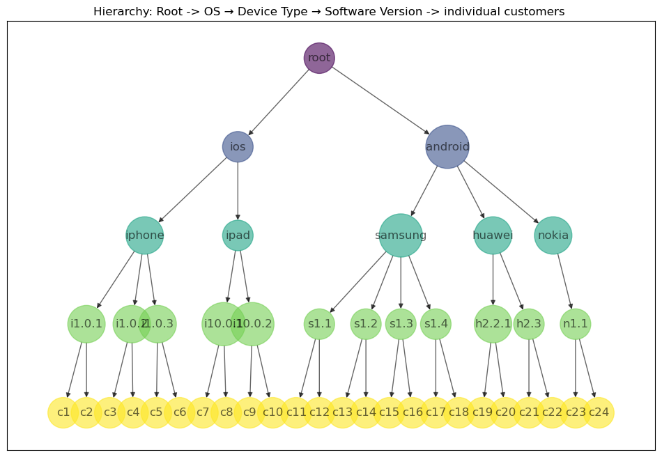
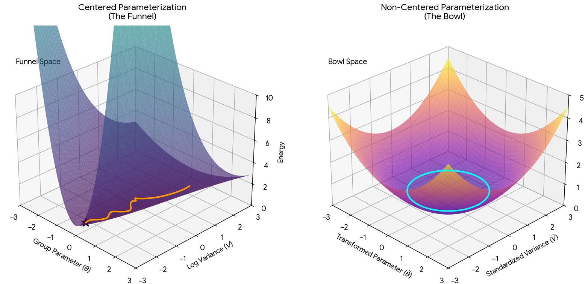

Translating a four-level hierarchy into a Stan model — Part 3
bayesian
ml
math
Published
September 2021
NOTE: The original post for part 3 was written by me and was not as detailed in its explanations of what each stan block does but I recently tried feeding the model1.6.stan(which was developed in 2021) and asked claude to interpet it. I didn’t expect it to understand and document the underlying model well enough but I was left shocked to see how well it did. Hence this version is much more verbose and detailed in its explanations.
In Part 1 we built an intuition for Bayesian modelling and why hierarchical (multilevel) models are such a natural fit for grouped, imbalanced data. In Part 2 we simulated a mobile-gaming revenue dataset and explored its data-generating mechanism — and saw first-hand why segments like Nokia (tiny sample size) need to borrow informatin from related segments.
In this notebook we get to the heart of the matter: defining and training the actual hierarchical Bayesian model in Stan.
We will work with the same business problem introduced before i.e predicting revenue for a mobile gaming company. In part 2, we saw that you have tons of data for iPhone users, but only a handful of data points for Nokia users. How do you make reliable revenue predictions for that sparse Nokia segment without either:
Ignoring the segment entirely (losing potential insights)
Making wildly unreliable predictions (overfitting to limited data)
This is where hierarchical Bayesian models shine. They let you “borrow information or strength” from related groups to make smarter predictions where data is limited.
Hierarchical Bayesian models balance two competing needs:
When data is abundant: Trust the actual observations and make group-specific predictions
When data is scarce: Lean on broader patterns from parent groups (priors) to guide predictions
The model automatically determines how much to “borrow” based on data availability. This prevents both overfitting (when you have 2 data points) and underfitting (when you have 2,000 data points).
We will assume familiarity with STAN going forward.
The Hierarchy We Are Modelling
Our goal is to predict revenue (install can be predicted as a target similarly but is not done in the current model version) for a mobile app across a hierarchical structure (4-level tree) as shown below.
Root → Operating System → Device → Software Version → (individual customers)
Root Level (μ_root, σ_root, sd_root)
Overall average revenue across all users
Base variation parameters
Operating System Level (μ_os, σ_os, sd_os)
iOS vs Android average revenues
Inherits from root, adds OS-specific variation
Device Level (μ_device, σ_device, sd_device)
Device type averages within each OS
Inherits from its parent OS
Software Version Level (μ_sw_version, σ_sw_version)
Specific version averages
Inherits from its parent device
import matplotlib.pyplot as pltfrom lib.visualizations import HierarchicalGraphVizfrom lib.data_helper_utilities import nodes_list, edges_list, nodes_colorsHierarchicalGraphViz(nodes_list, edges_list, nodes_colors)plt.title('Hierarchy: Root -> OS → Device Type → Software Version -> individual customers ')plt.show()

The core modelling idea: each level’s parameters are drawn from a distribution centered on its parent’s parameters, thus capturing the hierarchy.
At every level of the tree we track three kinds of parameters. The distinction between the parameters:
mu (μ) models “What is the average revenue for this group?”
sigma (σ) models “How much do individual customers inside this group differ from its mean?” (applied across the rows in the data and captures within-group variations)
sd models “How much do this group’s child groups differ from each other?” (captures across-group variations)
This structure is what produces partial pooling: a segment with lots of data (ex-Samsung) is dominated by its own observations, while a sparse segment (Nokia) gets pulled toward its parent’s mean. The amount of shrinkage is governed by the sd parameters — and the model learns those from the data too.
Setup
One piece of housekeeping before anything else. PyStan 2 is end-of-life and predates Apple Silicon; on recent macOS a stock pystan.StanModel(...) call either fails to compile or hard-crashes the interpreter with SIGBUS the moment it imports the freshly built model. The block below works around it by compiling with conda’s older clang while linking with the system linker and exporting only the PyInit_* symbol, so the model’s weak C++ symbols cannot collide with the ones PyStan already loaded.
In part2, we had generated the following simulated datasets - extra_small,small,medium and large of varying sizes. For model training, we will use the small dataset since it’s faster to train and better illustrates the issues we see with some groups having scarce datapoints.
###################################################################### macOS / Apple Silicon build fix - must precede `import pystan`,### which `helper_utilities` does at module level.###################################################################import osimport sysimport tempfileCONDA_PREFIX = os.environ.get("CONDA_PREFIX")assert CONDA_PREFIX, "stan_env is not activated - launch Jupyter from an activated stan_env shell"_exports = os.path.join(tempfile.gettempdir(), "pyinit_exports.txt")withopen(_exports, "w") as f: f.write("_PyInit_*\n")os.environ["CC"] =f"{CONDA_PREFIX}/bin/arm64-apple-darwin20.0.0-clang"os.environ["CXX"] =f"{CONDA_PREFIX}/bin/arm64-apple-darwin20.0.0-clang++"os.environ["LDSHARED"] = ("/usr/bin/clang -bundle -undefined dynamic_lookup "f"-Wl,-exported_symbols_list,{_exports}")### PyStan 2 multi-chain sampling needs 'fork', not 'spawn'import multiprocessingif multiprocessing.get_start_method(allow_none=True) !="fork": multiprocessing.set_start_method("fork", force=True)import pickleimport numpy as npimport pandas as pdimport helper_utilities as helper # this imports pystan###################################################################### Loading the Simulated Dataset (generated in Part 2)###################################################################country_weights = {'US': 0.2,'UK': 0.15,'India': 0.35,'China': 0.23,'Russia': 0.11}np.random.seed(12345678)configurations_filepath ="<your_config_path>"configs = helper.get_configs(configurations_filepath +'configs.yaml')sim_df = pd.read_csv(configs['input_data_filepath'] +'simulated_data_small.csv')print("Shape of simulated dataset = {}".format(sim_df.shape))sim_df.head()
Shape of simulated dataset = (1000, 12)
country
os
device_type
software_version
discount
install
revenue
country_index
id_index
os_index
device_type_index
software_version_index
0
UK
ios
ipad
i10.0.1
57.222006
0.0
381.480041
1
1
1
2
4
1
India
android
samsung
s1.3
380.925688
1.0
1088.359109
2
2
2
3
8
2
India
ios
iphone
i1.0.3
886.821518
1.0
2533.775767
2
3
1
1
3
3
India
android
samsung
s1.4
466.772456
0.0
1333.635588
2
4
2
3
9
4
US
android
samsung
s1.3
198.276403
0.0
991.382013
3
5
2
3
8
Explore the data to choose the right parametrization
It’s best to use the data to define the parametrizations and priors. Almost every design decision below is a response to a specific feature of this dataset, and the fastest way to understand the model is to see those features first.
Two questions decide the shape of the model:
How much do individual customers vary within a group? → this is what sigma has to be able to express.
### 1. WITHIN-group spread -> what sigma must be able to expresswithin = (sim_df .groupby(['os', 'device_type', 'software_version'])['revenue'] .agg(n='count', group_mean='mean', within_sd='std') .round(1) .sort_values('within_sd'))print("Within-software-version spread (this is sigma_sw_version):")print(within, "\n")observed = within['within_sd'].dropna()print(f" smallest within-group sd : {observed.min():.1f}")print(f" largest within-group sd : {observed.max():.1f}")print(f" ratio largest/smallest : {observed.max() / observed.min():.1f}x\n")
The above table shows significant within-group spread. That is an 4.9× ratio between the tightest and loosest group which means sigma_sw_version has to be able to span that range.
How much do sibling groups differ from each other? → this is what sd has to be able to express.
### 2. BETWEEN-sibling spread -> what sd must be able to expressversion_means = sim_df.groupby(['device_type', 'software_version'])['revenue'].mean()between_versions = version_means.groupby('device_type').agg(['count','mean', 'std']).round(1)between_versions.columns = ['n_versions', 'mean_versions','sd_of_version_means']print("Spread of software-version means within each device (this is sd_device):")print(between_versions, "\n")device_means = sim_df.groupby(['os', 'device_type'])['revenue'].mean()between_devices = device_means.groupby('os').agg(['count','mean', 'std']).round(1)between_devices.columns = ['n_devices', 'mean_vdevice','sd_of_device_means']print("Spread of device means within each OS (this is sd_os):")print(between_devices)
Spread of software-version means within each device (this is sd_device):
n_versions mean_versions sd_of_version_means
device_type
huawei 2 903.7 11.3
ipad 2 486.6 0.8
iphone 3 2012.4 13.0
nokia 1 464.9 NaN
samsung 4 1169.1 40.6
Spread of device means within each OS (this is sd_os):
n_devices mean_vdevice sd_of_device_means
os
android 3 853.9 366.6
ios 2 1249.1 1078.3
Clearly, between-sibling spread varies even more.
These observations will dictate the choice of sigma and sd in the stan model.
Anatomy of a Stan Program
A Stan program is organized into named blocks, each with a specific job and a specific execution frequency during sampling. Understanding when each block runs explains a lot of the design decisions we’ll see:
Block
Purpose
When it runs
data
Declares everything passed in from Python
Read once, before sampling
transformed data
Deterministic pre-computation on the data
Computed once, before sampling
parameters
The unknowns the sampler explores
Sampled at every step
transformed parameters
Deterministic functions of parameters (and data)
Re-computed at every step
model
Defines the log-posterior: priors + likelihood
Evaluated at every step
generated quantities
Derived values and random draws
Once per retained draw, after sampling
Let’s first look at the whole model file, then take it apart block by block. model1.6.stan defines the full model.
withopen('stan_models/model1.6.stan') as f: stan_code = f.read()for i, line inenumerate(stan_code.splitlines(), start=1):print(f"{i:3d}| {line}")
1| // model1.6.stan
2| data{
3| //// Passing Data Dimensions/Sizes
4| int<lower=10> num_samples;
5| int<lower=1> num_customers; // is same as num_samples
6| int<lower=1> num_os; //number of types of operating system
7| int<lower=1> num_devices; //number of types of devices
8| int<lower=1> num_software_versions; //number of types of software versions
9| int<lower=1> num_countries; // number of countries
10|
11| //// Passing Data elements to model
12| int<lower=1, upper=num_os> os[num_samples]; // operating system column
13| int<lower=1, upper=num_devices> device_type[num_samples]; // device_type column
14| int<lower=1, upper=num_software_versions> software_version[num_samples]; // software_version column
15| int<lower=1, upper=num_countries> country[num_samples]; // country column
16|
17| //// Hierarchy data
18| // Children in the tree hierarchy
19| int<lower=1, upper=num_devices> os_children[num_os]; // l0(os) children->l1(device)
20| int<lower=1, upper=num_software_versions> device_children[num_devices]; // l1(device) children->l2(sw_version)
21| int<lower=1, upper=num_customers> sw_version_children[num_software_versions]; // l2(sw) children->customers
22|
23| // Parent
24| int<lower=1, upper=num_os> device_parent[num_devices];
25| int<lower=1, upper=num_devices> sw_version_parent[num_software_versions];
26|
27| //// Passing Target Revenue
28| vector<lower=0>[num_samples] revenue; // revenue
29| vector<lower=0>[num_samples] discount;
30| int<lower=0, upper=1> install[num_samples]; // whether game was installed or not
31|
32| //Passing Priors
33| real LOCATION_mu_root;
34| real<lower=0> SCALE_mu_root;
35| real<lower=0> SCALE_sd_root; // scale of between groups variation at root
36| real<lower=0> SCALE_sigma_root; // scale of within groups variation at root
37| real<lower=0.05> SCALE_beta_country;
38| }
39|
40| transformed data{
41| int length_mu_raw_params; // length of raw mu params
42| int length_sigma_raw_params; // length of raw sigma params
43| int length_sd_raw_params; // length of raw sd params
44|
45| // Hyper-prior widths. These are on the LOG scale, i.e. sigma_root has a
46| // lognormal(log(SCALE_sigma_root), PRIOR_LOG_SCALE_ROOT) prior, so a value
47| // of 0.7 means "the root scale is within a factor of ~4 of SCALE_sigma_root
48| // with 95% probability".
49| real PRIOR_LOG_SCALE_ROOT; // width of the lognormal prior on the root scales
50| real PRIOR_SCALE_TAU; // half-normal scale on the level-to-level spread
51| real<lower=0> MIN_SIGMA_DISC; // floor on the discount residual sd
52|
53| PRIOR_LOG_SCALE_ROOT = 0.7;
54| PRIOR_SCALE_TAU = 0.5;
55|
56| // In the current simulation discount == country_weight * revenue EXACTLY
57| // (zero noise), so beta_country can drive every discount residual to 0 and
58| // the likelihood sigma^-N is unbounded as sigma -> 0. Without a floor the
59| // sampler collapses the step size and the chains freeze. This floor says
60| // "we do not claim to resolve the discount to better than 2% of its own
61| // spread". In future iteration of the simulation, we can addgenuine noise,
62| // then we can set something negligible (e.g. 1e-6) and let the data speak.
63| MIN_SIGMA_DISC = 0.02 * sd(discount);
64|
65| length_mu_raw_params = 1;
66| length_sigma_raw_params = 1;
67| length_sd_raw_params = 1;
68| // Covers first layer of the hierarchy i.e @os level
69| if(num_os>1){
70| length_mu_raw_params = length_mu_raw_params + num_os;
71| length_sigma_raw_params = length_sigma_raw_params + num_os;
72| length_sd_raw_params = length_sd_raw_params + num_os;
73| }
74| // Covers second layer of the hierarchy i.e @device_type level
75| // for each os - ios /android, if children>1, each child i.e device will have a mu/sigma/sd param
76| for(n in 1:num_os){
77| if(os_children[n]>1){
78| length_mu_raw_params = length_mu_raw_params + os_children[n];
79| length_sigma_raw_params = length_sigma_raw_params + os_children[n];
80| length_sd_raw_params = length_sd_raw_params + os_children[n];
81| }
82| }
83| // Covers third layer of the hierarchy i.e @software_version level
84| // for each software version, if the parent device has multiple software versions and if software version has multiple children
85| for(n in 1:num_software_versions){
86| int parent;
87| parent = sw_version_parent[n];
88| if(sw_version_children[n]>1 && device_children[parent]>1){
89| length_mu_raw_params = length_mu_raw_params + 1;
90| length_sigma_raw_params = length_sigma_raw_params + 1;
91| }
92| }
93| }
94|
95| parameters{
96| // Hierarchical relationship params. ALL of these are now unconstrained
97| // standard-normal z-scores
98| vector[length_mu_raw_params] mu_raw;
99| vector[length_sigma_raw_params] sigma_raw; // z-scores for log(sigma)
100| vector[length_sd_raw_params] sd_raw; // z-scores for log(sd)
101|
102| // How much a scale is allowed to move from one level of the tree to the
103| // next. tau -> 0 means "all groups share the parent's scale"; the data
104| // decide how much heterogeneity there is instead of a hard [1, 1.25] wall.
105| real<lower=0> tau_sigma;
106| real<lower=0> tau_sd;
107|
108| // Discount regression
109| vector<lower=0>[num_countries] beta_country;
110| real<lower=MIN_SIGMA_DISC> sigma_disc_error;
111| }
112|
113| transformed parameters{
114| /// Root params
115| real mu_root;
116| real<lower=0> sigma_root;
117| real<lower=0> sd_root;
118|
119| vector[num_os] mu_os;
120| vector<lower=0>[num_os] sd_os; // variation among devicew in an os
121| vector<lower=0>[num_os] sigma_os;
122|
123| vector[num_devices] mu_device;
124| vector<lower=0>[num_devices] sd_device;
125| vector<lower=0>[num_devices] sigma_device;
126|
127| vector[num_software_versions] mu_sw_version;
128| vector<lower=0>[num_software_versions] sigma_sw_version;
129|
130| vector[num_customers] revenue_hierarchy; // expected revenue for each customer
131| vector[num_customers] sigma_revenue; // sd of revenue for each customer
132|
133| {
134| int ctr_mu; // counter for mu
135| int ctr_sd; // counter for sd
136| int parent_idx; // parent's index in the hierarchy
137| ctr_mu = 1;
138| ctr_sd = 1;
139|
140| /// Root level of tree
141| mu_root = LOCATION_mu_root + SCALE_mu_root * mu_raw[ctr_mu];
142| // lognormal, centred on the scale the user supplies, but free to move
143| // an order of magnitude in either direction.
144| sigma_root = SCALE_sigma_root * exp(PRIOR_LOG_SCALE_ROOT * sigma_raw[ctr_mu]);
145| sd_root = SCALE_sd_root * exp(PRIOR_LOG_SCALE_ROOT * sd_raw[ctr_sd]);
146| ctr_mu = ctr_mu + 1;
147| ctr_sd = ctr_sd + 1;
148|
149| /// First Layer of Hierarchy - operating system
150| for( i in 1:num_os ){
151| if(num_os>1){
152| mu_os[i] = mu_root + sd_root * mu_raw[ctr_mu];
153| // multiplicative, but exp(tau*z) can be < 1 as well as > 1
154| sigma_os[i] = sigma_root * exp(tau_sigma * sigma_raw[ctr_mu]);
155| sd_os[i] = sd_root * exp(tau_sd * sd_raw[ctr_sd]);
156| ctr_mu = ctr_mu + 1;
157| ctr_sd = ctr_sd + 1;
158| }else{
159| mu_os[i] = mu_root;
160| sigma_os[i] = sigma_root;
161| sd_os[i] = sd_root;
162| }
163| }
164| /// Second Layer of Hierarchy - devices
165| for( i in 1:num_devices){
166| parent_idx = device_parent[i]; // the parent of device in the hierarchy is the operating system
167| if(os_children[parent_idx]>1){
168| mu_device[i] = mu_os[parent_idx] + sd_os[parent_idx] * mu_raw[ctr_mu];
169| sigma_device[i] = sigma_os[parent_idx] * exp(tau_sigma * sigma_raw[ctr_mu]);
170| sd_device[i] = sd_os[parent_idx] * exp(tau_sd * sd_raw[ctr_sd]);
171| ctr_mu = ctr_mu + 1;
172| ctr_sd = ctr_sd + 1;
173| }else{
174| mu_device[i] = mu_os[parent_idx];
175| sigma_device[i] = sigma_os[parent_idx];
176| sd_device[i] = sd_os[parent_idx];
177| }
178| }
179| /// Third Layer of Hierarchy - software versions
180| for( i in 1:num_software_versions){
181| parent_idx = sw_version_parent[i]; // the parent of software versions in the hierarchy is devices
182| if(device_children[parent_idx]>1 && sw_version_children[i]>1 ){
183| mu_sw_version[i] = mu_device[parent_idx] + sd_device[parent_idx] * mu_raw[ctr_mu];
184| sigma_sw_version[i] = sigma_device[parent_idx] * exp(tau_sigma * sigma_raw[ctr_mu]);
185| ctr_mu = ctr_mu + 1;
186| }else{
187| mu_sw_version[i] = mu_device[parent_idx];
188| sigma_sw_version[i] = sigma_device[parent_idx];
189| }
190| }
191| }
192|
193| // NOTE: revenue_hierarchy is now the EXPECTED revenue of the group a
194| // customer belongs to, not a free per-customer latent draw
195| revenue_hierarchy = mu_sw_version[software_version];
196| sigma_revenue = sigma_sw_version[software_version];
197| }
198|
199| model{
200| // PRIORS
201| mu_raw ~ normal(0,1);
202| sigma_raw ~ normal(0,1); // => lognormal priors on sigma_root/os/device/sw
203| sd_raw ~ normal(0,1); // => lognormal priors on sd_root/os/device
204|
205| tau_sigma ~ normal(0, PRIOR_SCALE_TAU); // half-normal (lower=0 in decl.)
206| tau_sd ~ normal(0, PRIOR_SCALE_TAU);
207|
208| beta_country ~ lognormal(log(0.25 * SCALE_beta_country), 0.5);
209|
210| // Half-normal on the excess above the floor. With noiseless discount data
211| // the posterior simply piles up at MIN_SIGMA_DISC, which is a clean
212| // exponential tail in the unconstrained space rather than a funnel.
213| sigma_disc_error ~ normal(MIN_SIGMA_DISC, 0.5 * sd(discount));
214|
215| // LIKELIHOOD
216| target += normal_lpdf( revenue | revenue_hierarchy, sigma_revenue );
217| target += normal_lpdf( discount | beta_country[country] .* revenue, sigma_disc_error );
218| }
219|
220| generated quantities{
221| vector[num_samples] log_lik; // for loo / waic in the evaluation notebook
222| vector[num_samples] revenue_rep; // posterior predictive draws
223|
224| for(n in 1:num_samples){
225| log_lik[n] = normal_lpdf(revenue[n] | revenue_hierarchy[n], sigma_revenue[n])
226| + normal_lpdf(discount[n] | beta_country[country[n]] * revenue[n], sigma_disc_error);
227| revenue_rep[n] = normal_rng(revenue_hierarchy[n], sigma_revenue[n]);
228| }
229| }
1. The data Block — What We Pass In
The data block declares every input the model needs. It has four logical sections:
1a. Dimensions
int<lower=10> num_samples;int<lower=1> num_customers; // same as num_samplesint<lower=1> num_os; // number of operating systemsint<lower=1> num_devices; // number of device typesint<lower=1> num_software_versions; // number of software versionsint<lower=1> num_countries;
Stan needs to know all array sizes up front. The <lower=...> constraints act as free sanity checks — Stan will refuse to run if, say, num_samples < 10.
Each categorical column is passed as an integer index array (Stan is 1-indexed — the Python side maps 'ios' → 1, 'android' → 2, etc.). These arrays tell the model which OS / device / software version / country each observation belongs to, and later let us do vectorized lookups like mu_sw_version[software_version].
1c. The hierarchy itself — children counts and parent maps
This is how the tree structure enters the model — Stan has no built-in notion of a hierarchy, so we nee to encode it explicitly with two kinds of arrays: - *_children[i] — how many children node i has one level down. E.g. os_children = {2, 3} says iOS has 2 devices (iphone, ipad) and Android has 3 (samsung, huawei, nokia). - *_parent[i] — the index of node i’s parent one level up. E.g. device_parent = {1, 1, 2, 2, 2} says devices 1–2 belong to OS 1 and devices 3–5 to OS 2.
The parent maps are used to inherit parameters down the tree; the children counts are used to decide when a level should collapse.
1d. Targets and priors
vector<lower=0>[num_samples] revenue;vector<lower=0>[num_samples] discount;int<lower=0, upper=1> install[num_samples]; // passed in, but unusedreal LOCATION_mu_root;real<lower=0> SCALE_mu_root;real<lower=0> SCALE_sd_root; // scale of BETWEEN-group variation at the rootreal<lower=0> SCALE_sigma_root; // scale of WITHIN-group variation at the rootreal<lower=0.05> SCALE_beta_country;
We model two outcomes jointly: revenue and discount (install is carried along for future model versions but is not used in the likelihood).
Note that the prior hyperparameters are passed as data rather than hard-coded. This is a deliberate design choice: you can rerun the model with different priors (e.g. for a prior-sensitivity analysis) without recompiling the Stan model — compilation takes tens of seconds, sampling with new data starts immediately.
2. The transformed data Block — Counting and Pre-computing
This block runs once, before sampling, and does two jobs.
2a. How many raw parameters does this tree need?
The parameter count depends on the shape of the tree, and — crucially — on the collapsing rule we implement in transformed parameters:
If a parent has only one child, that child gets no parameters of its own — it inherits its parent’s values exactly.
You cannot estimate between-group variation from a single group member (there is no “between”). Giving a lone child its own free parameter would make the model non-identifiable: the data could not distinguish the parent’s value from the child’s offset. So single children are collapsed onto their parents, and we do not allocate raw parameters for them.
In our data, Nokia has exactly one software version (n1.1). Without collapsing, we would be asking the model to estimate a mean, a within-group spread and a between-version spread from a single number.
The block walks the tree level by level, incrementing three length counters:
length_mu_raw_params = 1; length_sigma_raw_params = 1; length_sd_raw_params = 1;// Covers first layer of the hierarchy i.e @os levelif(num_os>1){ length_mu_raw_params = length_mu_raw_params + num_os; length_sigma_raw_params = length_sigma_raw_params + num_os; length_sd_raw_params = length_sd_raw_params + num_os; }// Covers second layer of the hierarchy i.e @device_type level// for each os - ios /android, if children>1, each child i.e device will have a mu/sigma/sd paramfor(n in1:num_os){if(os_children[n]>1){ length_mu_raw_params = length_mu_raw_params + os_children[n]; length_sigma_raw_params = length_sigma_raw_params + os_children[n]; length_sd_raw_params = length_sd_raw_params + os_children[n]; } }// Covers third layer of the hierarchy i.e @software_version level// for each software version, if the parent device has multiple software versions and if software version has multiple childrenfor(n in1:num_software_versions){int parent; parent = sw_version_parent[n];if(sw_version_children[n]>1 && device_children[parent]>1){ length_mu_raw_params = length_mu_raw_params + 1; length_sigma_raw_params = length_sigma_raw_params + 1; } }
The software-version level allocates no sd.sd is between-child variation, and a software version’s children are the individual customers — their spread is already sigma_sw_version. The deepest grouping level only needs mu and sigma.
The software-version condition is stricter: it requires both that the parent device has multiple software versions (device_children[parent] > 1) and that this software version has multiple observations (sw_version_children[n] > 1). A software version with a single observation can’t support its own mean-and-scale pair since one data point can’t be separated from its group mean.
Whatever counting logic lives here must be mirrored exactly by the counter logic in transformed parameters. If the two ever disagree, the model will either index out of bounds or leave parameters unused (both are bugs).
2b. Prior widths and the discount floor
real PRIOR_LOG_SCALE_ROOT; // width of the lognormal prior on the root scalesreal PRIOR_SCALE_TAU; // half-normal scale on level-to-level spreadreal<lower=0> MIN_SIGMA_DISC; // floor on the discount residual sdPRIOR_LOG_SCALE_ROOT = 0.7;PRIOR_SCALE_TAU = 0.5;MIN_SIGMA_DISC = 0.02 * sd(discount);
The transformed data block is meant for performing any transformations on the data. Example: sd(discount) is a Stan function evaluated once on the observed data.
We’ll come back to MIN_SIGMA_DISC when we reach the likelihood; it exists to defuse a genuine pathology in the simulated discount column.
The problem is the posterior geometry this creates is notoriously hard for MCMC. When sd_root is small, all the mu_os[i] are squeezed into a narrow band around mu_root. When it’s large, they spread out. The joint posterior of (sd_root, mu_os) forms a funnel (“Neal’s funnel”) — a shape where no single step size works everywhere. The sampler either takes steps too big for the funnel’s neck (divergent transitions) or too small for its mouth (slow, autocorrelated chains). Funnels are worst exactly where hierarchical models are most useful: sparse groups, where the data doesn’t pin the group-level parameters down.
The fix is the non-centered parameterization: sample a standardized raw value, then shift and scale it deterministically:
Mathematically, mu_root + sd_root * z with z ~ N(0,1) is exactly same as N(mu_root, sd_root). But now the sampler explores independent standard normals (a nice round blob) instead of a funnel, and the funnel geometry is absorbed into the deterministic transform.

Centered vs non-centered parameterization: the funnel and the bowl
Left: in the centered parameterization the sampler has to squeeze into the funnel’s narrow neck as the log-variance shrinks, so no single step size works everywhere. Right: after the non-centered transform it explores a smooth, symmetric bowl with the same curvature in every direction, so one step size fits the whole space.
Model 1.6 applies this trick to every stochastic relationship in the tree.
4. mu — an Additive, Gaussian Parameter
Let’s start with the question - what is the natural arithmetic of a group mean?
Revenue means live on an unbounded, additive scale. What we want to be able to say are differences:
“iPhone customers spend about 900 more than the average Android customer.”
Not ratios, not something confined to a positive interval. So the natural relationship between a parent and child mean is parent plus an offset, and the natural distribution for an offset that could go either way is a Gaussian centred on zero. Hence:
with mu_raw ~ normal(0, 1). Every line has the same shape: child = parent + (parent’s sd) × (a standard normal draw).
Why the parent’s sd is the child’s prior scale
This is the mechanism that makes it “hierarchical” rather than just “nested”. sd_root is a parameter, learned from the data, and it directly controls how far children may wander from their parent:
If the data says sd_root is small, then mu_os[ios] and mu_os[android] are both forced to sit close to mu_root. Strong pooling: the model concludes that OS barely matters.
If the data says sd_root is large, the two OS means are free to separate. Weak pooling: OS matters a lot.
The model does not have to be told which regime it is in. It infers sd_root from how spread out the OS-level evidence actually is.
A worked shrinkage example: Nokia
Nokia has 16 data points in the simulated dataset but let’s assume for the sake of this argument that Nokia had exactly one customer in the data, with revenue 400 and the Android average is 1000.
A no-pooling model (fit each device separately) would estimate mu_device[nokia] = 400 — confidently, on the basis of a single point. This would be similar to what we’d face in the traditional ML world.
A complete-pooling model (ignore device) would estimate 1000, throwing away the fact that this customer looks unusual.
The hierarchical model estimates mu_device[nokia] = mu_os[android] + sd_os[android] * z, where z is pulled toward 0 by its N(0,1) prior and away from 0 by that single observation. One data point is weak evidence, so the posterior lands between the two extremes, closer to the Android mean, with an honestly wide interval.
That “somewhere in between, and the data decides where” is partial pooling, and it falls out of this one line of arithmetic.
The root has no parent, so its “parent” is the prior we supply: 1300 + 200 * z, i.e. N(1300, 200) written non-centrally. Consistent with every other level — the root just gets its location and scale from the input data dictionary passed to the model instead of from a node above it.
5. sigma and sd — Multiplicative, Lognormal Parameters
Now ask the same question about the scale parameters, and notice that the answer changes.
Scales are strictly positive, and they compare naturally by ratio, not by difference.
“iPhone revenue is about four times as variable as iPad revenue.”
Not “500 more variable”. And an additive step has a fatal flaw for a positive quantity: nothing stops parent + offset from going negative, which is meaningless for a standard deviation.
And the natural way to parameterize a positive multiplicative factor is to work on the log scale, where multiplication becomes addition and the whole non-centered trick from the last section applies unchanged:
This is the same hierarchical statement as for mu — child centred on parent, with a learned spread — just expressed in log space because that is where scales are additive. It is a lognormal hierarchy.
5a. tau — letting the data decide how heterogeneous the scales are
Notice that tau_sigma and tau_sd are also parameters, not constants:
parameters {real<lower=0> tau_sigma;real<lower=0> tau_sd;}model { tau_sigma ~ normal(0, PRIOR_SCALE_TAU); // half-normal: lower=0 in the declaration tau_sd ~ normal(0, PRIOR_SCALE_TAU);}
tau is the hierarchical prior on the scales themselves. It captures how much do sibling groups differ in how variable they are.
If tau_sigma → 0, thenevery group in the tree has the same within-group spread. Complete pooling of scales; the model collapses to a single global sigma.
If tau_sigma is large, then each group’s variability is essentially free to be its own thing. No pooling of scales.
If tau_sigma is in between, then partial pooling, exactly as sd_root does for the means.
Because tau_sigma is declared <lower=0> and given normal(0, 0.5), Stan reads that as a half-normal: a soft prior concentrated near zero (the sceptical default — “probably the groups are similar”) with a long enough tail to allow real heterogeneity if the data dictates.
Same construction, but the “parent” is the prior. With PRIOR_LOG_SCALE_ROOT = 0.7, this is a lognormal(log(100), 0.7) prior: median 100, and a 95% interval of roughly [25, 400]. This implies that ehe overall scale of variation is around 100, but it could also be 30 or 350, which is a weak but it’s about as much as we honestly know before seeing the data.
6. The parameters Block — What the Sampler Actually Explores
parameters {// Hierarchy raw parameters - ALL unconstrained standard-normal z-scoresvector[length_mu_raw_params] mu_raw;vector[length_sigma_raw_params] sigma_raw; // z-scores for log(sigma)vector[length_sd_raw_params] sd_raw; // z-scores for log(sd)// How much a scale may move from one level of the tree to the nextreal<lower=0> tau_sigma;real<lower=0> tau_sd;// Discount regressionvector<lower=0>[num_countries] beta_country;real<lower=MIN_SIGMA_DISC> sigma_disc_error;}
None of the parameters we actually care about are sampled directly. Everything the sampler touches is a raw ingredient:
mu_raw — one flat vector holding the standardized location offsets for every node that earned its own parameter (root + OSes + devices + software versions). Its length is exactly the length_mu_raw_params computed in transformed data.
sigma_raw, sd_raw — also plain N(0,1) z-scores, but living on the log scale: sigma_raw[k] is the standardized log-multiplier for node k.
tau_sigma, tau_sd — the two learned heterogeneity parameters from the previous section.
beta_country — the per-country discount fraction. Note it is a direct parameter with lower=0.
sigma_disc_error — a single scalar
7. The transformed parameters Block — Assembling the Tree
This is where the flat raw vectors become the actual hierarchical parameters, walking the tree from root to leaves. It re-runs at every sampler step.
The counter scheme
int ctr_mu; // counter into mu_raw AND sigma_rawint ctr_sd; // counter into sd_rawctr_mu = 1;ctr_sd = 1;
All raw values are packed into flat vectors, so we need a way to know which slot belongs to which tree node. Rather than pre-computing index offsets per level, the code consumes slots in order with incrementing counters: every time a node claims a parameter it reads mu_raw[ctr_mu] and bumps the counter. As long as this walk visits nodes in the same order — and applies the same skip conditions — as the counting loop in transformed data, every raw slot is consumed exactly once. It’s a compact way to handle trees of any shape without the ragged multidimensional arrays Stan doesn’t support well.
Two counters are needed because sd parameters stop one level earlier than mu/sigma (software versions have no sd).
7a. Root level
/// Root level of treemu_root = LOCATION_mu_root + SCALE_mu_root * mu_raw[ctr_mu];// lognormal, centred on the scale the user supplies, but free to move// an order of magnitude in either direction.sigma_root = SCALE_sigma_root * exp(PRIOR_LOG_SCALE_ROOT * sigma_raw[ctr_mu]);sd_root = SCALE_sd_root * exp(PRIOR_LOG_SCALE_ROOT * sd_raw[ctr_sd]);ctr_mu = ctr_mu + 1;ctr_sd = ctr_sd + 1;
mu is additive, the two scales, sigma and sd multiplicative.
7b. Level 1 — Operating system
/// First Layer of Hierarchy - operating systemfor( i in1:num_os ){if(num_os>1){ mu_os[i] = mu_root + sd_root * mu_raw[ctr_mu];// multiplicative, but exp(tau*z) can be < 1 as well as > 1 sigma_os[i] = sigma_root * exp(tau_sigma * sigma_raw[ctr_mu]); sd_os[i] = sd_root * exp(tau_sd * sd_raw[ctr_sd]); ctr_mu = ctr_mu + 1; ctr_sd = ctr_sd + 1; }else{ mu_os[i] = mu_root; sigma_os[i] = sigma_root; sd_os[i] = sd_root; }}
The parent’s sd is the child’s prior scale for the mean; the parent’s sigma is the child’s baseline for the spread. Both are learned. And here is the first collapse: with a single OS there is no between-OS variation to estimate, so the OS level simply becomes the root, matching the if (num_os > 1) condition in transformed data.
7c. Level 2 — Device
/// Second Layer of Hierarchy - devicesfor( i in1:num_devices){ parent_idx = device_parent[i]; // the parent of device in the hierarchy is the operating systemif(os_children[parent_idx]>1){ mu_device[i] = mu_os[parent_idx] + sd_os[parent_idx] * mu_raw[ctr_mu]; sigma_device[i] = sigma_os[parent_idx] * exp(tau_sigma * sigma_raw[ctr_mu]); sd_device[i] = sd_os[parent_idx] * exp(tau_sd * sd_raw[ctr_sd]); ctr_mu = ctr_mu + 1; ctr_sd = ctr_sd + 1; }else{ mu_device[i] = mu_os[parent_idx]; sigma_device[i] = sigma_os[parent_idx]; sd_device[i] = sd_os[parent_idx]; }}
Same pattern, one level down, with the parent looked up through device_parent[i]. Samsung’s mean is drawn around Android’s mean (not the root’s), scaled by Android’ssd. This is how information flows through the tree: Nokia has only a few observations so it barely moves mu_device[nokia] away from mu_os[android], which is itself well-estimated from Samsung’s and Huawei’s abundant data.
7d. Level 3 — Software version
/// Third Layer of Hierarchy - software versionsfor( i in1:num_software_versions){ parent_idx = sw_version_parent[i]; // the parent of software versions in the hierarchy is devicesif(device_children[parent_idx]>1 && sw_version_children[i]>1 ){ mu_sw_version[i] = mu_device[parent_idx] + sd_device[parent_idx] * mu_raw[ctr_mu]; sigma_sw_version[i] = sigma_device[parent_idx] * exp(tau_sigma * sigma_raw[ctr_mu]); ctr_mu = ctr_mu + 1; }else{ mu_sw_version[i] = mu_device[parent_idx]; sigma_sw_version[i] = sigma_device[parent_idx]; }}
Two deliberate differences from the levels above:
No sd_sw_version. This is the deepest grouping level — its children are individual customers, whose spread is sigma_sw_version. A between-child sd here would be redundant.
A stricter, two-part collapse condition. A software version gets its own parameters only if its parent device has multiple versions and the version itself has multiple observations.
Two vectorized lookups, expanding version-level vectors to one entry per row. Every customer inherits their software version’s mean and spread — and that is the entire observation model for revenue.
Three normal(0, 1) statements now carry the entire hierarchy. This is the payoff of the non-centered parameterization: the structure lives in the transforms, so the priors stay trivial.mu_raw ~ normal(0,1) is one vectorized line, yet through the previous block it implies the whole cascade — mu_os ~ N(mu_root, sd_root), mu_device ~ N(mu_os, sd_os), and so on. Likewise sigma_raw ~ normal(0,1) implies sigma_os ~ lognormal(log(sigma_root), tau_sigma) at every level.
beta_countryhas a lognormal prior with lower=0 : median 0.25, 95% interval roughly [0.094, 0.66]. Soft everywhere, zero density only at zero itself, and no wall near any plausible value.
(target += normal_lpdf(...) is equivalent to the ~ notation — it adds the log-density directly to the accumulated log-posterior.)
Revenue: revenue[i] ~ N(mu_sw_version[v(i)], sigma_sw_version[v(i)]) — a customer’s revenue is drawn around their software version’s mean.
Discount: discount[i] ~ N(beta_country[c(i)] * revenue[i], sigma_disc_error) — a customer’s discount is a country-specific fraction of their revenue.
Since the data generated didn’t have any noise term for discount, we include the noise term below.
### Add the observation noise the discount column as was done in part2DISCOUNT_NOISE_SD =25.0if DISCOUNT_NOISE_SD >0: rng = np.random.default_rng(12345678) noisy = sim_df['discount'] + rng.normal(0, DISCOUNT_NOISE_SD, sim_df.shape[0])### Discount can't be negative so Stan declares `vector<lower=0>[num_samples] discount` n_clipped =int((noisy <0).sum())if n_clipped:print(f"WARNING: clipped {n_clipped} negative discount value(s) at 0") sim_df['discount'] = noisy.clip(lower=0.0)### Before: discount/revenue was EXACTLY the country weight for every row.### After: it scatters around it, which is what the model assumes.ratio = (sim_df['discount'] / sim_df['revenue']).groupby(sim_df['country']).agg(['mean', 'std'])print("discount / revenue ratio by country:")print(ratio.round(4).to_string())print(f"\nsd(discount) = {sim_df['discount'].std():.1f}")
WARNING: clipped 1 negative discount value(s) at 0
discount / revenue ratio by country:
mean std
country
China 0.2305 0.0293
India 0.3496 0.0327
Russia 0.1077 0.0284
UK 0.1473 0.0307
US 0.2032 0.0286
sd(discount) = 172.0
10. The generated quantities Block — Setting Up for Validation
generated quantities{vector[num_samples] log_lik; // for loo / waic in the evaluation notebookvector[num_samples] revenue_rep; // posterior predictive drawsfor(n in1:num_samples){ log_lik[n] = normal_lpdf(revenue[n] | revenue_hierarchy[n], sigma_revenue[n]) + normal_lpdf(discount[n] | beta_country[country[n]] * revenue[n], sigma_disc_error); revenue_rep[n] = normal_rng(revenue_hierarchy[n], sigma_revenue[n]); }}
This block runs once per retained draw, after the expensive work is done, and it is where you put anything you’ll want for model validation:
log_lik — the pointwise log-likelihood of each observation. This is what arviz.loo() needs to compute leave-one-out cross-validation. Without it exported at sampling time, you cannot compute LOO afterwards; you have to refit.
revenue_rep — a fresh simulated revenue for each customer, drawn from the fitted model. Comparing the distribution of revenue_rep against the real revenue is a posterior predictive check: if the model cannot generate data that looks like what you observed, it does not matter how clean the diagnostics are.
11. Training the Model
Now let’s actually run it. The workflow:
Derive the hierarchy arrays from the dataframe.
Assemble the data dictionary whose keys match the Stan data block exactly.
Sanity-check the inputs.
Compile the Stan model and run MCMC sampling.
Check the diagnostics before looking at a single parameter.
Pickle the fitted object for evaluation (Part 4).
import pystanimport arviz as azprint("pystan", pystan.__version__)# print("CC set to:", os.environ.get("CC"))
INFO:numexpr.utils:Note: NumExpr detected 10 cores but "NUMEXPR_MAX_THREADS" not set, so enforcing safe limit of 8.
INFO:numexpr.utils:NumExpr defaulting to 8 threads.
pystan 2.19.1.1
Deriving the hierarchy arrays
The Stan model needs the children counts and parent maps we discussed in the data block. Two helpers in helper_utilities.py derive them straight from the dataframe:
get_num_children(df, parent_col, child_col) — for each parent (ordered by its Stan index), the number of distinct children under it.
get_parent(df, parent_col, child_col) — for each child (ordered by its Stan index), its parent’s index.
Note the dataframe already carries *_index columns (os_index, device_type_index, …) — the 1-based integer codes Stan requires. Let’s inspect what these helpers produce, and check them against the collapse rules from section 2:
### Children counts: how many devices per OS, how many software versions per device, ...print("os_children (devices per OS):")print(helper.get_num_children(sim_df, parent_col='os', child_col='device_type'), "\n")print("device_children (software versions per device):")print(helper.get_num_children(sim_df, parent_col='device_type', child_col='software_version'), "\n")print("sw_version_children (customers per software version):")print(helper.get_num_children(sim_df, parent_col='software_version', child_col='id'), "\n")### Parent maps: which OS each device belongs to, which device each software version belongs toprint("device_parent (OS index for each device):")print(helper.get_parent(sim_df, parent_col='os', child_col='device_type'), "\n")### Which nodes will COLLAPSE onto their parent? (section 2's rules)dev_children = helper.get_num_children(sim_df, parent_col='device_type', child_col='software_version')sw_children = helper.get_num_children(sim_df, parent_col='software_version', child_col='id')sw_parent = helper.get_parent(sim_df, parent_col='device_type', child_col='software_version')n_customers =dict(zip(sw_children['software_version'], sw_children['num_children']))n_versions =dict(zip(dev_children['device_type_index'], dev_children['num_children']))device_name =dict(zip(dev_children['device_type_index'], dev_children['device_type']))print("Software versions that inherit their device's parameters instead of getting their own:")for _, row in sw_parent.iterrows(): sw = row['software_version'] dev_idx = row['parent_id'] kids =int(n_customers[sw]) # customers on this version siblings =int(n_versions[dev_idx]) # versions on the parent deviceifnot (kids >1and siblings >1):print(f" {sw:8s} (device {device_name[dev_idx]:8s}) "f"customers={kids}, sibling versions={siblings}")
Every key below corresponds one-to-one to a declaration in the Stan data block — PyStan will raise an error if any are missing or violate the declared constraints.
The last five entries are the prior hyperparameters. Read them as: mean revenue is believed to be around 1300 ± 200, with between-group and within-group variation scales of the order of 100 (those two are lognormal medians).
model_dt = {### Dimensions / sizes'num_samples': sim_df.shape[0],'num_customers': sim_df.shape[0], # same as num_samples'num_os': sim_df.os.nunique(),'num_devices': sim_df.device_type.nunique(),'num_software_versions': sim_df.software_version.nunique(),'num_countries': sim_df.country_index.nunique(),### Group membership of each observation (1-based indices)'os': sim_df.os_index,'device_type': sim_df.device_type_index,'software_version': sim_df.software_version_index,'country': sim_df.country_index,### Hierarchy: children counts'os_children': helper.get_num_children(sim_df, parent_col='os', child_col='device_type')['num_children'],'device_children': helper.get_num_children(sim_df, parent_col='device_type', child_col='software_version')['num_children'],'sw_version_children': helper.get_num_children(sim_df, parent_col='software_version', child_col='id')['num_children'],### Hierarchy: parent maps'device_parent': helper.get_parent(sim_df, parent_col='os', child_col='device_type')['parent_id'],'sw_version_parent': helper.get_parent(sim_df, parent_col='device_type', child_col='software_version')['parent_id'],### Targets'revenue': sim_df.revenue,'discount': sim_df.discount,'install': sim_df.install.astype(int),### Prior hyperparameters'LOCATION_mu_root': 1300, # prior mean of overall revenue'SCALE_mu_root': 200, # prior sd of overall revenue'SCALE_sd_root': 100, # prior MEDIAN between-group spread (lognormal)'SCALE_sigma_root': 100, # prior MEDIAN within-group spread (lognormal)'SCALE_beta_country': 1}
Sanity checks
Stan’s error messages for bad data can be cryptic (“initialization failed” often just means a null or an out-of-range index) and it doesn’t hurt to verify none of the arrays we’re passing contain nulls.
check_nulls_for_keys = [key for key in model_dt.keys()ifnot key.startswith(('num', 'LOCATION', 'SCALE'))]for key in check_nulls_for_keys: n_null =int(model_dt[key].isnull().sum())print(f"Number of nulls for {key} in the data passed to stan model = {n_null}")assert n_null ==0, f"{key} contains nulls"print("\nAll inputs clean.")
Number of nulls for os in the data passed to stan model = 0
Number of nulls for device_type in the data passed to stan model = 0
Number of nulls for software_version in the data passed to stan model = 0
Number of nulls for country in the data passed to stan model = 0
Number of nulls for os_children in the data passed to stan model = 0
Number of nulls for device_children in the data passed to stan model = 0
Number of nulls for sw_version_children in the data passed to stan model = 0
Number of nulls for device_parent in the data passed to stan model = 0
Number of nulls for sw_version_parent in the data passed to stan model = 0
Number of nulls for revenue in the data passed to stan model = 0
Number of nulls for discount in the data passed to stan model = 0
Number of nulls for install in the data passed to stan model = 0
All inputs clean.
Compile and sample
Two steps happen here:
Compilation — pystan.StanModel(...) translates the Stan program to C++ and compiles it. It only needs to happen when the model code changes.
Sampling — model.sampling(...) runs the NUTS/HMC sampler:
Argument
Value
Why
chains=2
2 independent chains
Lets us check convergence (R-hat compares between-chain vs within-chain variance)
warmup=1000
first 1000 draws discarded
The sampler needs time to adapt its step size and find the typical set
adapt_delta=0.99
target acceptance rate (default 0.8)
Higher → smaller steps → fewer divergent transitions, at some speed cost
max_treedepth=12
max NUTS trajectory depth
Raised from 10 to match the smaller step size
pars=[...]
parameters to retain
Keep the interpretable transformed parameters plus log_lik/revenue_rep; drop the raw z-scores
seed=1234
RNG seed
Reproducibility
model = pystan.StanModel(file='stan_models/model1.6.stan')controls = {}controls['max_treedepth'] =12controls['adapt_delta'] =0.99### mu_raw / sigma_raw / sd_raw are plain N(0,1) z-scores now, not interpretable### quantities, so they are dropped. log_lik and revenue_rep are required for validation.params_of_interest = ['mu_root', 'mu_os', 'mu_device', 'mu_sw_version','sigma_root', 'sigma_os', 'sigma_device', 'sigma_sw_version','sd_root', 'sd_os', 'sd_device','beta_country', 'revenue_hierarchy','tau_sigma', 'tau_sd', 'sigma_disc_error','log_lik', 'revenue_rep']fit = model.sampling(data=model_dt, chains=2, seed=1234, warmup=1000, iter=2000, control=controls, pars=params_of_interest)
WARNING:pystan:Maximum (flat) parameter count (1000) exceeded: skipping diagnostic tests for n_eff and Rhat.
To run all diagnostics call pystan.check_hmc_diagnostics(fit)
WARNING:pystan:3 of 2000 iterations ended with a divergence (0.15 %).
WARNING:pystan:Try running with adapt_delta larger than 0.99 to remove the divergences.
Before reading a single parameter estimate, check whether the sampler actually worked. A beautiful posterior mean computed from a broken fit is still wrong, and nothing downstream will warn you.
The one that matters most here is divergent transitions. A divergence means the leapfrog integrator lost the Hamiltonian and the affected draws are rejected systematically, not at random.
Ideally we’d want 0 divergences, but a 0.15% divergence rate is low and means the model had to navigate some touch geometries. It can be fixed by increasing adapt_delta, or max_treedepth or checking the priors or with some re-parametrization.
sampler_params = fit.get_sampler_params(inc_warmup=False)n_divergent =sum(int(np.sum(c['divergent__'])) for c in sampler_params)n_treedepth =sum(int(np.sum(np.array(c['treedepth__']) >= controls['max_treedepth']))for c in sampler_params)n_draws =sum(len(c['divergent__']) for c in sampler_params)summary = fit.summary()summary_df = pd.DataFrame(summary['summary'], index=summary['summary_rownames'], columns=summary['summary_colnames'])print("="*62)print(f"divergences : {n_divergent}/{n_draws} ({100* n_divergent / n_draws:.1f}%)")print(f"max_treedepth hits : {n_treedepth}/{n_draws}")print(f"worst R-hat : {summary_df['Rhat'].max():.4f}")print(f"min n_eff : {summary_df['n_eff'].min():.0f}")print("="*62)
The luxury of simulated data is that we know the right answers. Two quick checks:
beta_country should recover the country weights we used in Part 2: US 0.20, UK 0.15, India 0.35, China 0.23, Russia 0.11.
sigma_disc_error should recover the DISCOUNT_NOISE_SD = 25 we injected earlier.
The bar is not that the posterior mean is close but that the true value lies inside the credible interval, with intervals that are neither absurdly wide nor suspiciously narrow.
country_weights = {'US': 0.2,'UK': 0.15,'India': 0.35,'China': 0.23,'Russia': 0.11}country_lookup = (sim_df[['country', 'country_index']] .drop_duplicates() .set_index('country_index')['country'] .to_dict())print("beta_country recovery:")print(f" {'country':<8}{'true':>6}{'posterior mean':>15} 95% credible interval")for idx insorted(country_lookup): name = country_lookup[idx] row = summary_df.loc[f'beta_country[{idx}]'] hit ="yes"if row['2.5%'] <= country_weights[name] <= row['97.5%'] else"NO"print(f" {name:<8}{country_weights[name]:>6.2f}{row['mean']:>15.3f} "f"[{row['2.5%']:.3f}, {row['97.5%']:.3f}] contains truth: {hit}")row = summary_df.loc['sigma_disc_error']print(f"\nsigma_disc_error: true {DISCOUNT_NOISE_SD:.1f}, "f"posterior {row['mean']:.2f} [{row['2.5%']:.2f}, {row['97.5%']:.2f}]")### The learned heterogeneity parameters from section 5aprint("\nLearned scale heterogeneity:")for p in ['tau_sigma', 'tau_sd']: r = summary_df.loc[p]print(f" {p:<10}{r['mean']:.3f} [{r['2.5%']:.3f}, {r['97.5%']:.3f}]"f" -> a typical one-level move multiplies the scale by "f"exp(+/-{r['mean']:.2f}) = [{np.exp(-r['mean']):.2f}, {np.exp(r['mean']):.2f}]")### And the within-group scalesprint("\nsigma_sw_version posterior means:")sw_sigma = summary_df.loc[[i for i in summary_df.index if i.startswith('sigma_sw_version')], 'mean']print(f" range: [{sw_sigma.min():.1f}, {sw_sigma.max():.1f}]")
beta_country recovery:
country true posterior mean 95% credible interval
UK 0.15 0.149 [0.146, 0.152] contains truth: yes
India 0.35 0.348 [0.346, 0.350] contains truth: yes
US 0.20 0.202 [0.200, 0.205] contains truth: yes
China 0.23 0.230 [0.228, 0.232] contains truth: yes
Russia 0.11 0.108 [0.103, 0.112] contains truth: yes
sigma_disc_error: true 25.0, posterior 25.31 [24.28, 26.36]
Learned scale heterogeneity:
tau_sigma 0.343 [0.223, 0.554] -> a typical one-level move multiplies the scale by exp(+/-0.34) = [0.71, 1.41]
tau_sd 1.040 [0.226, 1.801] -> a typical one-level move multiplies the scale by exp(+/-1.04) = [0.35, 2.83]
sigma_sw_version posterior means:
range: [93.5, 439.9]
Save the fitted model
Compilation and sampling are expensive so persist both the compiled model and the fit so evaluation can happen in a fresh session.